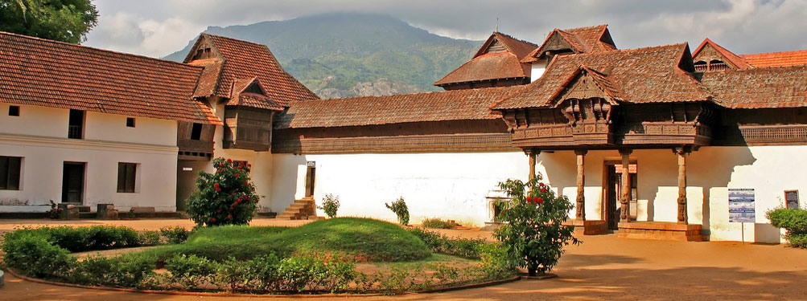

|  |
Padmanabhapuram Palace is a Travancore -era palace located in Padmanabhapuram, Kanyakumari District, Tamil Nadu. It is owned and maintained by the Government Of Kerala. Padmanabhapuram is the former capital city of the erstwhile Hindu Kingdom of Travancore. It is around 20km from Nagercoil, and 50km from Thiruvananthapuram city. The palace is complex inside with an old granite fortress around four kilometers long. The palace is located at the foot of the Veli Hills, which forms a part of the Western Ghats. The river Valli flows nearby. The Padmanabhapuram Palace complex consists of several structures:
|
|